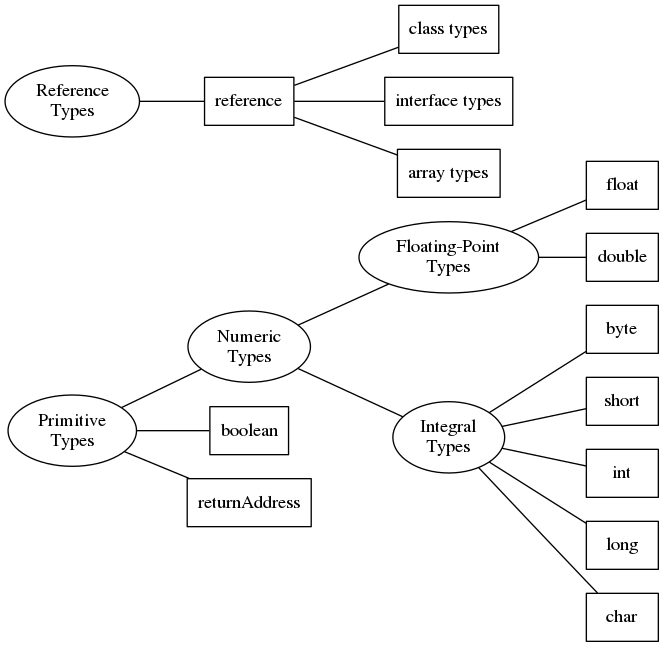

Java Virtual Machine
Sergey V. Ignatov
Created: 2018-12-07 Fri 13:22
Virtual Machine
- A Virtual Machine (VM) is software implementation of a machine (for example, a computer) that executes programs like a physical machine
- Virtual Machines are separated into to major classification:
- System Virtual Machine
- Process
Java Virtual Machine (JVM)
- a Java Virtual Machine (JVM) is a Process Virtual Machine that can execute Java Byte Code
- JVM converts Java Byte Code into Machine Language and executes it.
- JVM is platform independent: JVMs are avaliable for many hardware and software platforms.
- JVM gives the flexibility of platform independence.
- JVM enables a set of computer software programs and data structures to use a virtual machine model for the execution of other computer programs and scripts
- Not just Java and Java-clone languages now supports many languages: Ada, C, Lisp, Python
Why Java Virtual Machine?
- The Java platform was initially developed to address the problems of building software for networked consumer devices
- It was designed to support multiple host architectures and to allow secure delivery of software components
- To meet these requirements, compiled code had to survive transport across networks, operate on any client, and assure the client that if was safe to run
- "Write Once, Run Anywhere"
Java Principles
- Sun Microsystems set five primary goals in the creation of the Java language:
- It should be "simple, object oriented, and familiar"
- It should be "robust and secure"
- It should be "architecture neutral and portable"
- It should execute with "high performance"
- It should be "interpreted, threaded, and dynamic"
Java Run-Time System

Java Class File
- Java compilers generate class file:
- magic number (
0xCAFEBABE) - minor version/major version
- constant pool
- access flags
- this class
- super class
- interfaces
- fields
- methods
- attributes (extra hints for the JVM or other applications)
- magic number (
Class Loading
- Classes are loaded lazily when first accessed
- Class name must match file name
- Super classes are loaded first (transitively)
- The bytecode is verified
- Static fields are allocated and given default values
- Static initializers are executed
Java Virtual Machine
- Target Hardware - all CISC and RISC
- Machine type - Stack Machine
- "Big Endian" encoding - large order bits in the lower address
- Instructions are byte aligned for memory efficiency
- Instructions are closely aligned to Java source
Java Virtual Machine Registers
pc- Program Counteroptop- Pointer to the top of the operand stackframe- Pointer to the current execution environmentvars- Pointer to the first (0th) local variable in the current execution environment
JVM Instructions Set Architecture
- JVM instruction consists of a one-byte opcode specifying the operation to be performed, followed by zero or more operands supplying arguments or data that are used by the operation
- Operands are not required, thera are many instructions that consist of only the opcode
- On-byte instructions allow for up to 256 instructions
- Each instruction has a mnemonic name which is mapped to the binary one-byt opcode
Java Bytecode Instructions
- The JVM ISA (Instruction Set Architecture) is a CISC architecture
- The JVM has 256 instructions for:
- arithmetic and logic operations
- type conversion
- branch operations (control transfer)
- constant loading operations
- locals operations (load and store)
- stack operations (stack operand management)
- class and object operations (creation and manipulation)
- method operations (invocation and return)
- See the JVM specification for the full list
JVM Data Types
- JVM operates on two kinds of types: primitive types and reference types
- Integral Types:
- Byte - 8bit signed integers
- Short - 16bit signed integers
- Int - 32bit signed integers
- Long - 64bit signed integers
- Char - 16bit unsigned integers representing Unicode characters
- Floating Point Types:
- Float - 32bit single-precision float
- Double - 64bit double-precision float
- Boolean - values
trueandfalse - returnAddress - pointers to the opcodes of JVM instructions
JVM Reference Data Types
- Three kinds of reference types
- Class types
- Array types
- Interface types
- These reference dynamically created classes, arrays, or interface implementations
- Can be set to null when not referencing anything and then cast to any type
JVM Data Types

The JVM Stack
- As threads are created each thread get a Java Stack and
pcregister - JVM creates a stack frame for each method of a class
- Local Variables
- Execution Environment
- Operand Stack
JVM Local Variables
- Array of 32-bit variables
- types longer than 32-bit (double) use consecutive cells
- pointed at by
varsregister - loaded onto and stored from operand stack
JVM Execution Environment
- Info about the current state of the JVM Stack
- pointer to previous method invoked
- pointer to local variables
- pointers to top and bottom of operand stack
JVM Operand Stack
- 32-bit FIFO
- holds the arguments for opcodes
- a subsection of the JVM Stack
- primary area for the current status of bytecode execution
JVM Garbage Collected Heap
- Memory from which class instances are allocated
- Interpreter monitors memory usage and reclaims memory when no longer in use
- Garbage collection is automatic
JVM Memory Area
- Method Area - bytecodes for all Java Methods
- Constant Pool - class names, method and field names, string constants
JVM Limitations
- 4GB internal addressing due to 32bit wide stack implementation
- Methods are limited to 32Kb due to 16bit offset addressing used for branching
- 256 local variables/stack (8bit field)
- 32Kb constant pool entries per method